Kapadokya · 22 Ağustos 2022
Yeşilöz (Tağar) Köyü Nekropolü
Nevşehir ili Ürgüp ilçesine bağlı bir köy. Köyün 1927 yılındaki kayıtlarda adı Tağar (Yunanca Theodor) olarak geçer. Köyde Aziz Theodoros’a adanmış oldukça eski ve benzersiz bir Rum kilisesi bulunuyor. Theodoros “Allah Verdi” demektir.
Köyün güneyindeki kaya blokunda boylu boyunca kaya oyma savunma yapıları ve nekropol bulunuyor.
Nekropol içerisinde yer alan bir mezar cephesindeki süslemeler ile olduka ilgi çekici görünüyor.
Bölgede kaya içinden bol miktarda tatlı su sızıyor, köylü bu suyu depolamak için bir havuz yapmış.
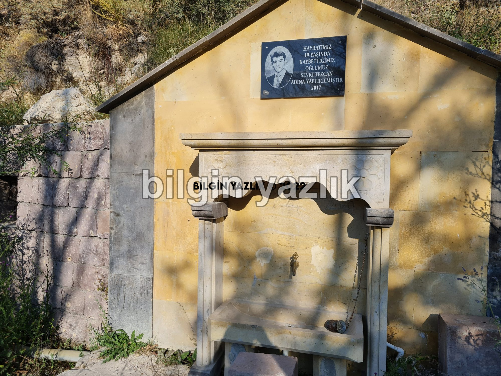
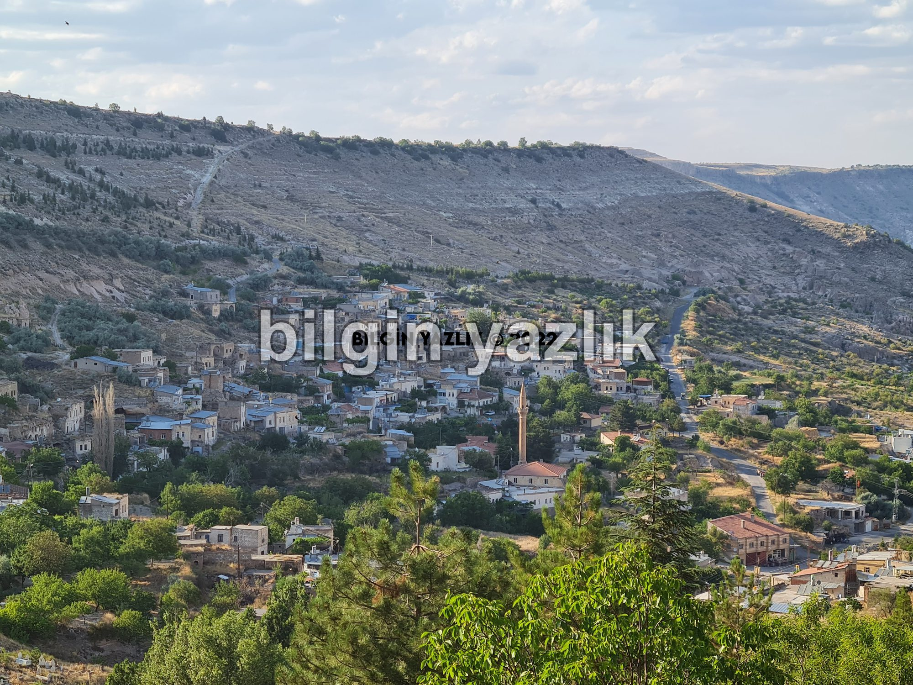
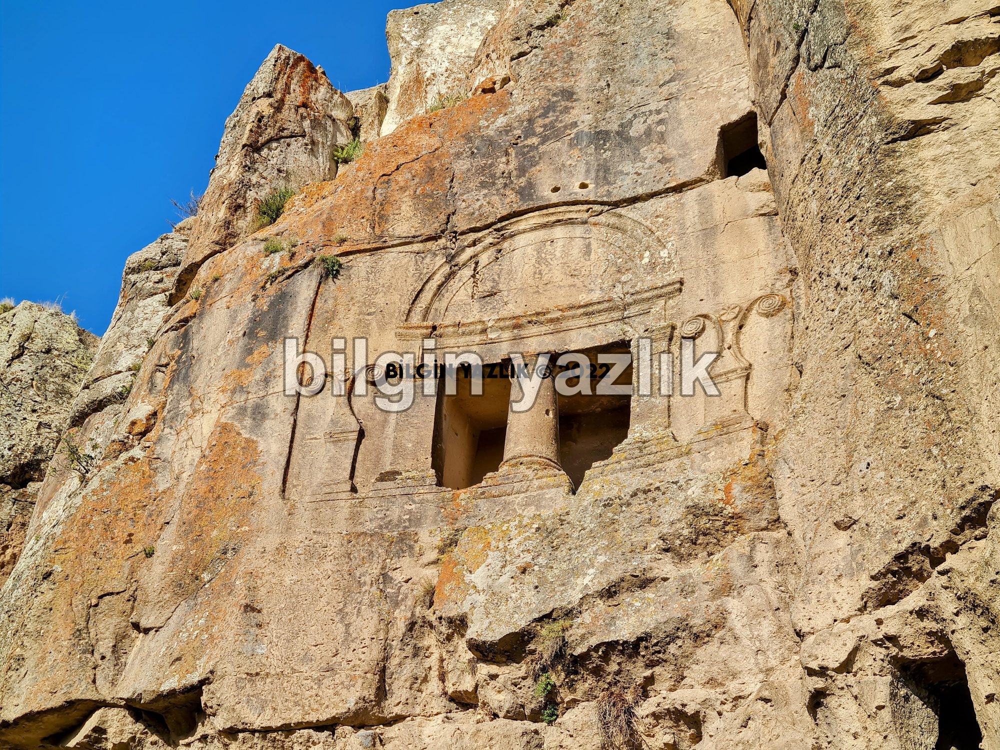
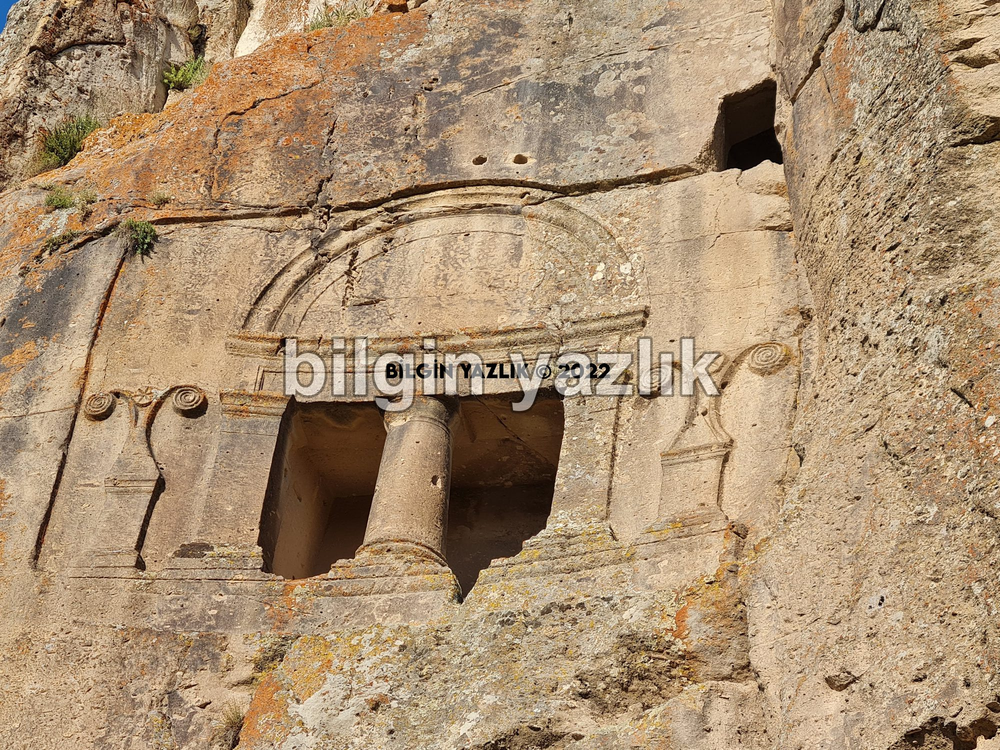
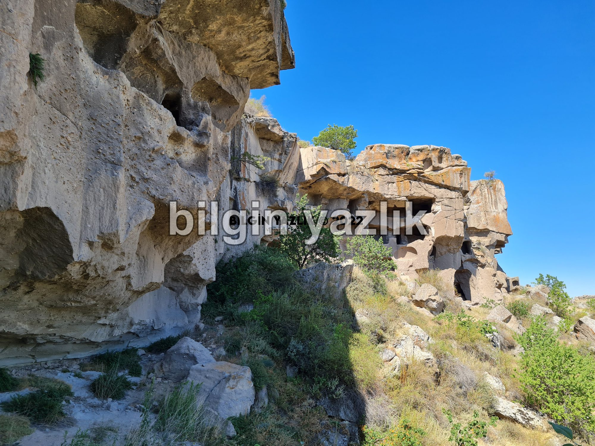
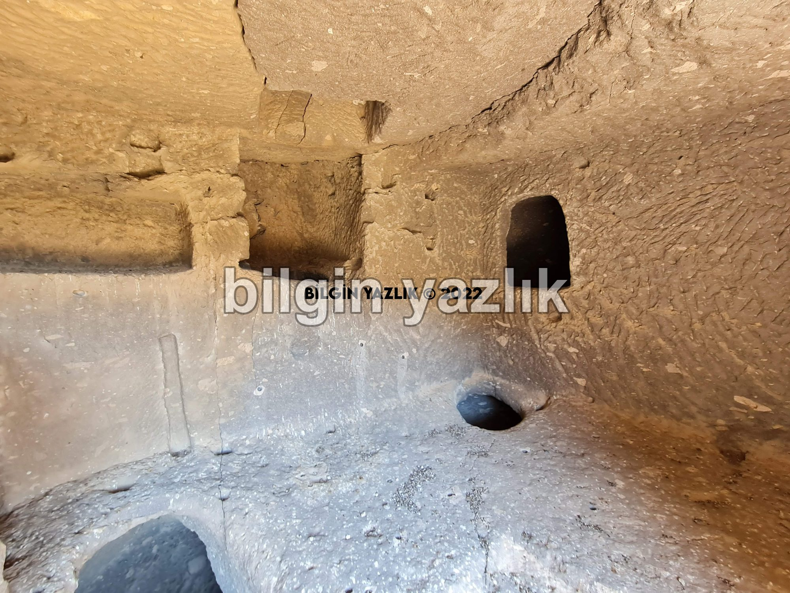
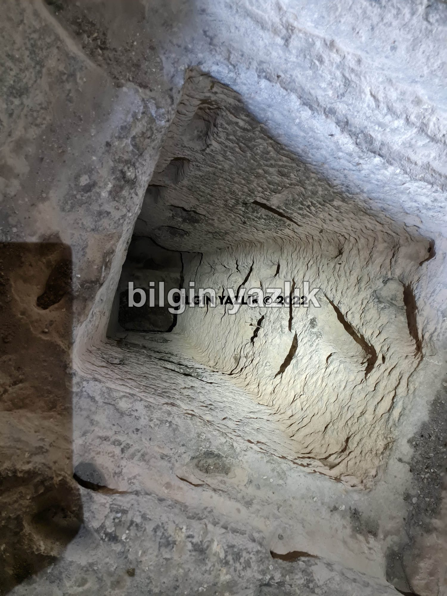
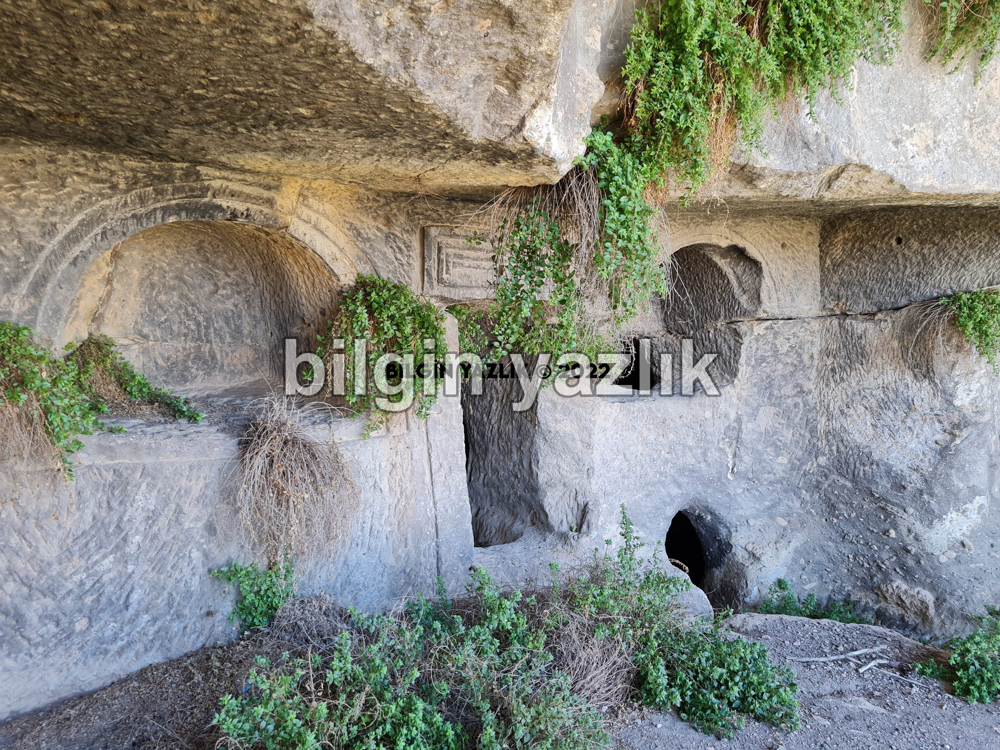
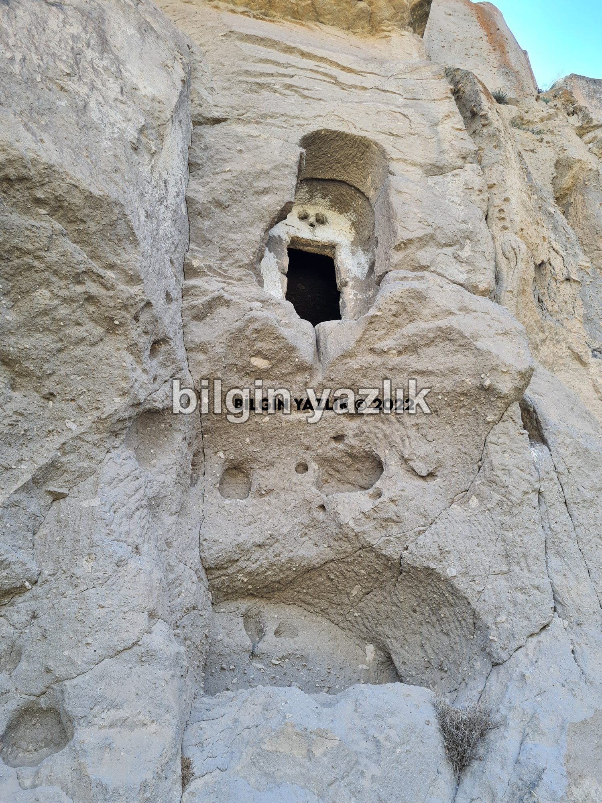
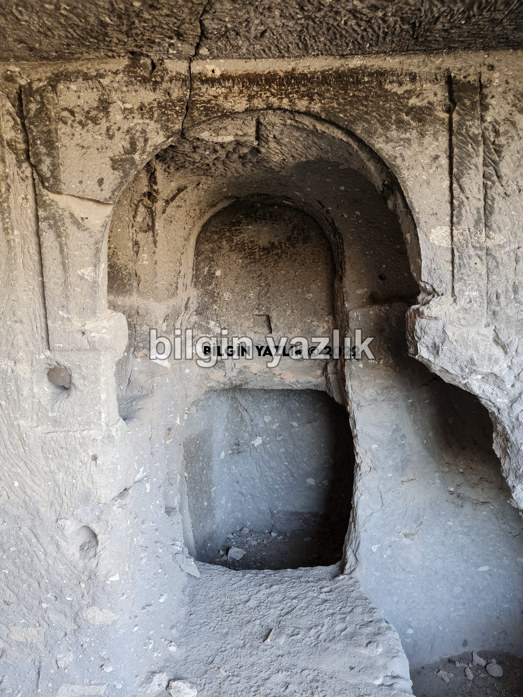
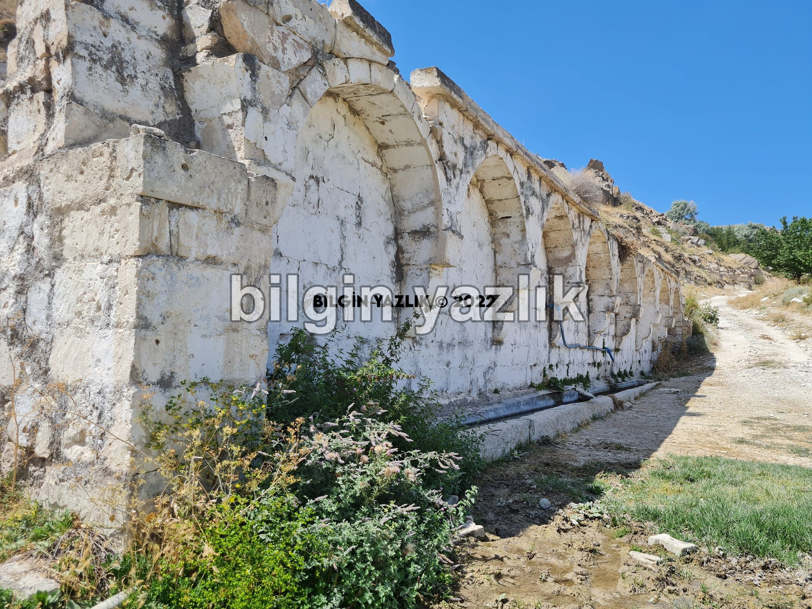
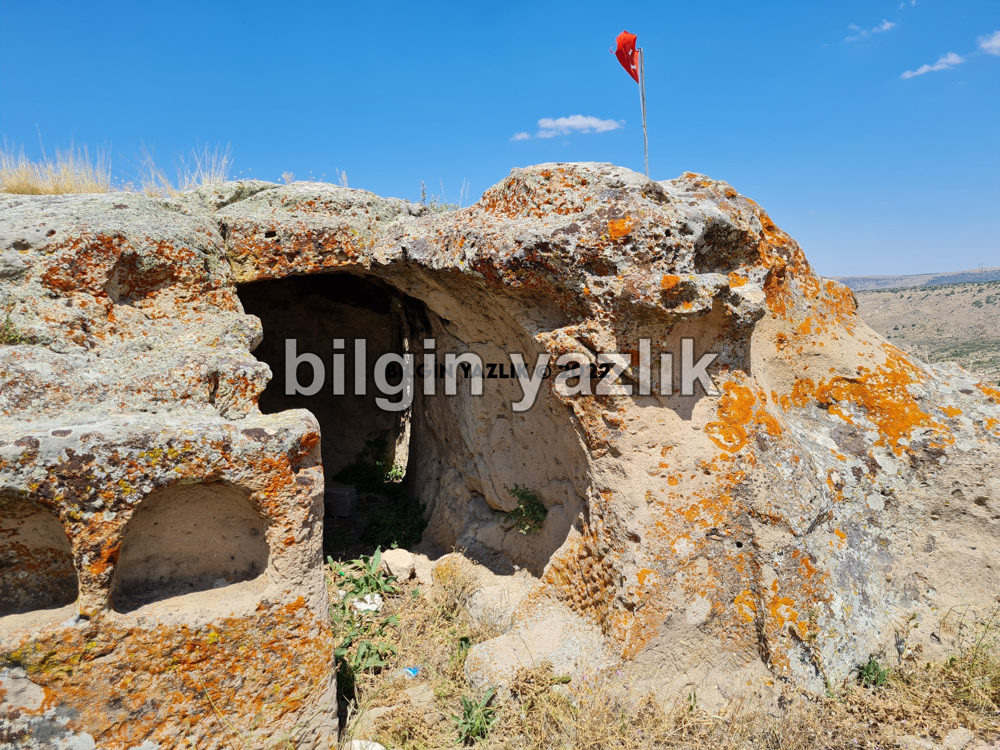
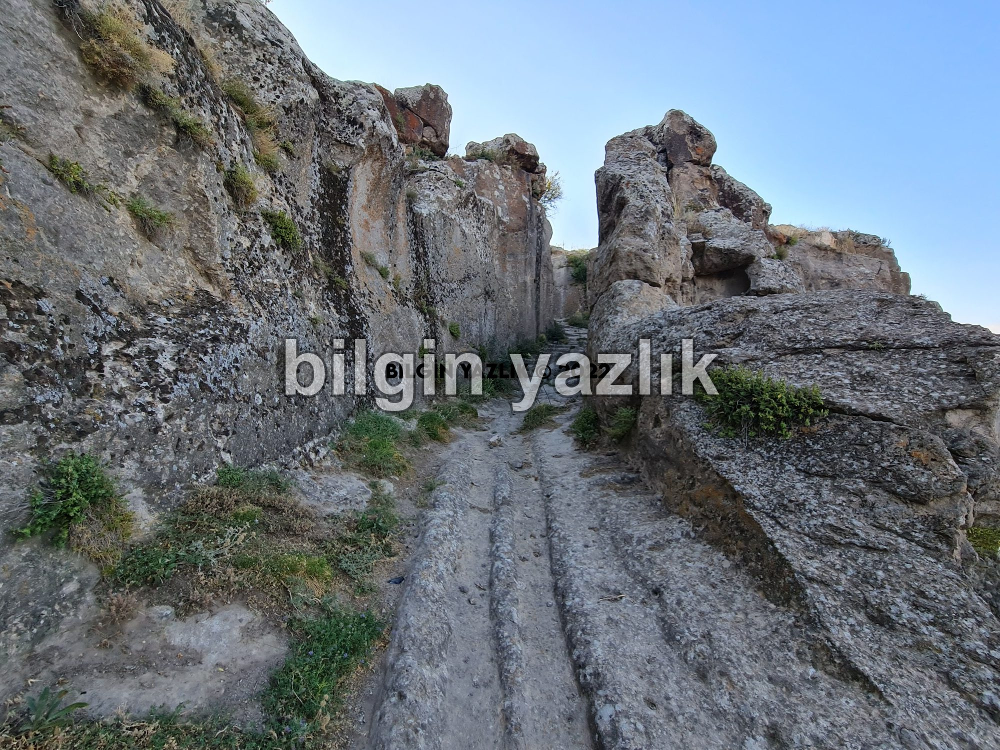
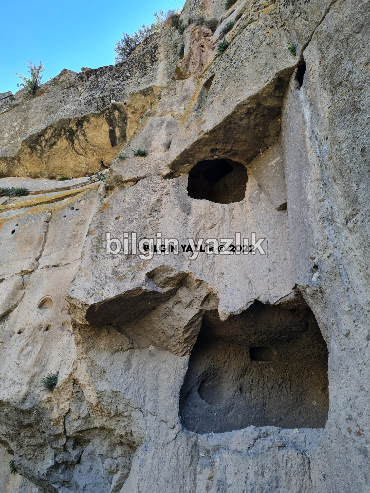
Bu yazı taliyol arşivinden taşınmıştır. · özgün kayıt